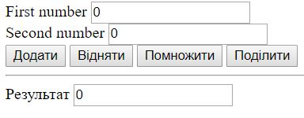

-
Задача 3. Дано 5 випадковим чином згенерованих нумерованих списків з випадковим числами (кількість елементів у списку випадкова від 1 до 10, елементи випадкові – від 1 до 100). При натисненні на кнопку нумеровані списки з парною кількістю елементів зафарбувати у зелений колір, інші у червоний.
-
Задача 4. Дано 3 таблиці розмірності 3 * 3 з випадковими числами. Якщо відбувається клік на якійсь із клітинок, то до відповідної таблиці додається червона рамка (спробуйте додати можливість відображення кількості кліків біля назви таблиці з використанням відповідно доданого для цього атрибута).
-
Задача 5. Відобразити таблицю 3 * 4 з випадковими числами (її треба динамічно створити і вставити на сторінку).
